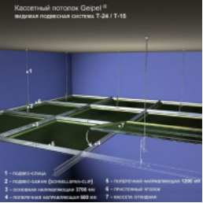

Один із видів підвісних стель - касетна стеля. Стелі цього типу
виробництва фірми Geipel - вдале поєднання функціональності, якості та
краси. Вони володіють усіма необхідними характеристиками, зокрема
вологостійкістю і пожежною безпекою, а крім того, мають стильний і
сучасний вигляд. Серед касетних стель виділяються стелі з дзеркальним
покриттям, за допомогою яких можна візуально збільшити об'єм кімнати,
водночас такі стелі підходять для вологого прибирання і безпечні для
здоров'я. Встановити дзеркальну стелю можна в приміщенні будь-якого
типу, чи то житловий будинок, чи то офісна будівля, установа медичного
або навчального призначення.
Модульна конструкція стелі Geipel передбачає легкий і зручний
монтаж навіть у приміщеннях з великою площею стель, і, що особливо
важливо, просту заміну стелі без заміни самої системи - наприклад,
якщо касети зазнали якихось пошкоджень. Природно, це дасть змогу
уникнути зайвих витрат.
Який вигляд має касетна стеля Geipel?
Кожна касета - це панель з алюмінію або оцинкованої сталі, що має
квадратну форму. Незважаючи на те, що можливе замовлення касет
практично будь-якого кольору, стандартні колірні рішення - це білий,
дзеркальні срібний і золотий, срібний «металік». Покриття касет
здійснюється за допомогою якісних фарб, стійкість яких перед вологим
або іншим агресивним середовищем дає змогу їм тривалий час
залишатися в прекрасному стані. Надійні матеріали здатні витримувати
монтаж і демонтаж неодноразово, зберігаючи при цьому свій первісний
вигляд. Можливі також додаткові характеристики касет для приміщень з
особливими вимогами, наприклад, підвищена вентиляційна здатність
досягається за допомогою перфорації, а для поліпшення акустики
застосовується мінеральне скловолокно. Також за бажанням замовника в
касетах можуть бути присутніми вирізи різних форм для спеціального
обладнання - труб, світильників, гучномовців тощо.
Переваги касетної стелі Geipel

Рівень якості
Для виробництва підвісних касетних стель Geipel використовують
високоякісні метали - оцинковану сталь і алюміній.
Товщину металу, яка забезпечує найкращі
експлуатаційні властивості касетних стель,
визначають за допомогою складних інженерних
розрахунків.
Поверхні касет у процесі виготовлення
надають ідеальної гладкості, що робить стелю особливо функціональною і,
звісно, стильною та красивою.